Contents
constants
Q4_IMAGE = 'simul_cont_squares.tif'; Q5_IMAGE = 'cross.tif'; Q6_IMAGE = 'kofka_ring.tif'; Q10_DATA = 'checkerShadow'; Q11_DATA = 'runner'; Q12_DATA = 'couch';
question 4
figure(); % read the image & compute laplacian (absolute value) I = double(imread(Q4_IMAGE)); [m, n] = size(I); [Ix, Iy] = ImageDerivatives(I); L = abs(Deriv2Laplace(Ix, Iy)); % define the left/right parts of the image (exclude border ~ 10 pixels % in the middle) leftL = L(1:end, 1:(n/2-5)); rightL = L(1:end, (n/2+5):end); epsilon = 10; T_space = 1:10; for T = T_space if (length(find(leftL > T)) > epsilon) && ... (length(find(rightL > T)) <= epsilon) fprintf('Found T = %u\n', T); break; % the result is T = 8 end end fprintf('Number of pixels > T in the left image = %u\n', ... length(find(leftL > T))); % == 1004 fprintf('Number of pixels > T in the right image = %u\n', ... length(find(rightL > T))); % == 4 show(L > T); title(['Laplacian > T where T = ', num2str(T)]);
Found T = 8 Number of pixels > T in the left image = 1004 Number of pixels > T in the right image = 4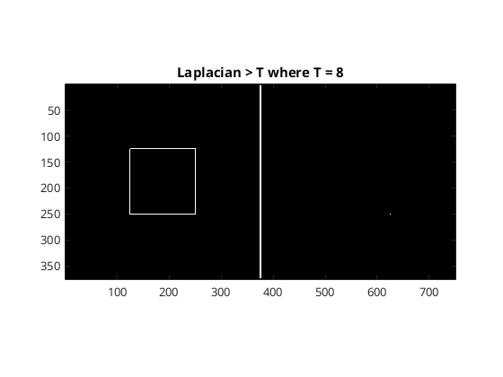
question 5
figure(); I = double(imread(Q5_IMAGE)); show(I, [0 255]); [Ix, Iy] = ImageDerivatives(I); L = abs(Deriv2Laplace(Ix, Iy)); Diag = logical(eye(length(L))); Diag = Diag | rot90(Diag); noDiag = not(Diag); T_space = 1:10; epsilon = 0.8; figure(); for T = T_space if (~isempty(find(L(Diag) > T, 1))) && ... isempty(find(L(noDiag) > T, 1)) fprintf('Found T = %u\n', T); break; end end % T = 0.017; % show that this threshold is tight: subplot(1, 2, 1); show(L > T); title(sprintf('Laplacian > T where T = %u', T)); subplot(1, 2, 2); show(L > (T-epsilon)); title(sprintf('Laplacian > T where T = %.2f', T-epsilon)); % number of pixels > T on every part of the image fprintf('Number of pixels > T on diagonal = %u\n', ... length(find(L(Diag) > T))); % == 52 fprintf('Number of pixels > T NOT on diagonal = %u\n', ... length(find(L(noDiag) > T))); % == 0
Found T = 5 Number of pixels > T on diagonal = 52 Number of pixels > T NOT on diagonal = 0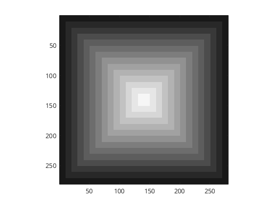 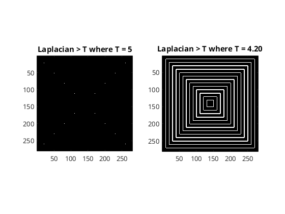
question 6
figure(); I = double(imread(Q6_IMAGE)); show(I, [0 255]); [Ix, Iy] = ImageDerivatives(I); L = abs(Deriv2Laplace(Ix, Iy)); figure(); T_space = 5:5:25; k = numel(T_space); rows = 2; cols = ceil(k/2); for i = 1:k subplot(rows, cols, i); T = T_space(i); show(L > T); title(sprintf('T = %u', T)); end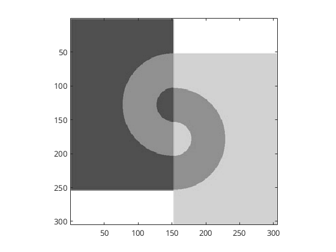 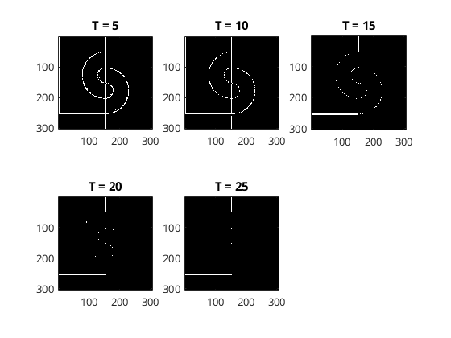
question 9
generate & show the stimuli
figure(); I1 = twoSquares(1); I2 = twoSquares(2); subplot(2, 2, 1); show(I1, [0 2]); title('twoSquares(1)'); subplot(2, 2, 3); show(I2, [0 2]); title('twoSquares(2)'); % run retinex T = 0.07; [R1, L1] = do_retinex(I1, T); subplot(2, 2, 2); plot(diag(R1)); title('diag(reflectance)'); xlabel('index in diagonal'); ylabel('reflectance value'); [R2, L2] = do_retinex(I2, T); subplot(2, 2, 4); plot(diag(R2)); title('diag(reflectance)'); xlabel('index in diagonal'); ylabel('reflectance value'); % check if changing T helps figure(); T_space = 0.01:0.015:0.1; k = numel(T_space); for i = 1:k T = T_space(i); [R, ~] = do_retinex(I2, T); subplot(2, ceil(k/2), i); plot(diag(R)); title(sprintf('T = %f', T)); xlabel('index in diagonal'); ylabel('reflectance value'); end % it does not.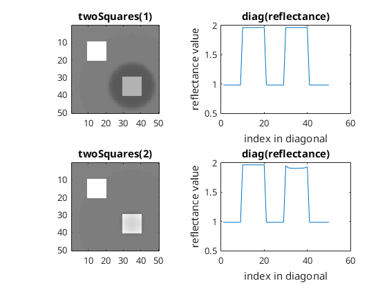 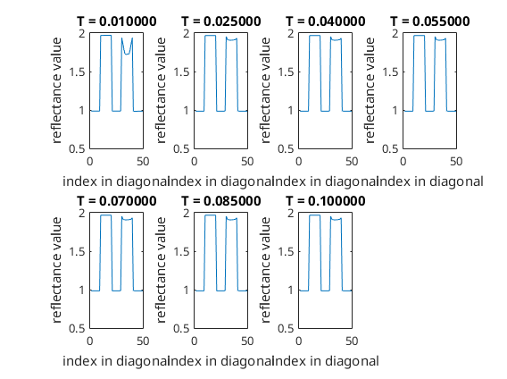
qeustion 10
figure(); checker = load(Q10_DATA); show(checker.im1, [0 1]); x1 = checker.x1; x2 = checker.x2; y1 = checker.y1; y2 = checker.y2; fprintf('A = %f \t B = %f\n', checker.im1(y1,x1), checker.im1(y2,x2)); % indeed, A = B = 0.419608 T = 0.07; [R, L] = do_retinex(checker.im1, T); fprintf('R(A) = %f \t R(B) = %f\n', R(y1,x1), R(y2,x2)); % as perceived: R(A) = 0.566 < 0.876 = R(B) figure(); subplot(1, 2, 1); show(R); title('reflectance'); subplot(1, 2, 2); show(L); title('illumination');
A = 0.419608 B = 0.419608 R(A) = 0.566459 R(B) = 0.876770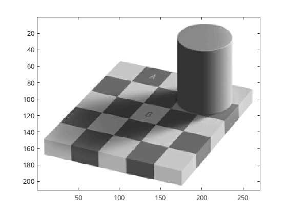 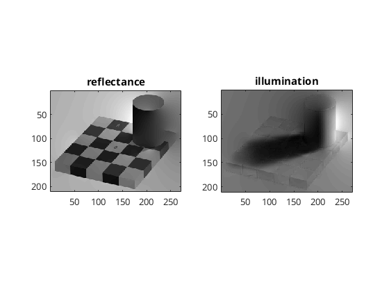
question 11
figure(); runner = load(Q11_DATA); show(runner.im1); title('original image'); T_space = 0.05:0.02:0.15; k = numel(T_space); figure(); for i = 1:k subplot(2, ceil(k/2), i); T = T_space(i); [R, L] = do_retinex(runner.im1, T); show(R); title(['T = ' num2str(T)]); end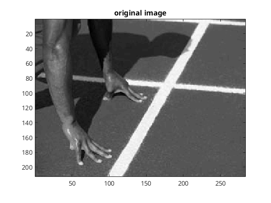 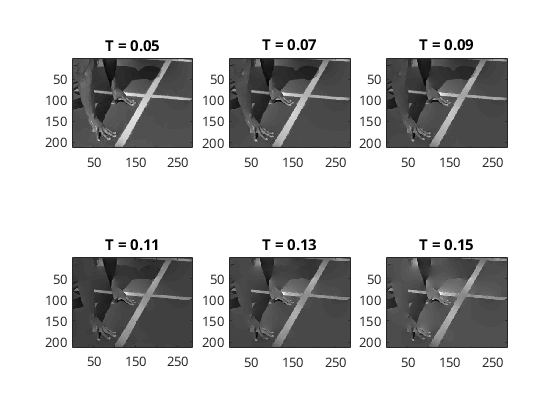
question 12
figure(); couch = load(Q12_DATA); show(couch.im1); title('original image'); T_space = 0.01:0.01:0.04; k = numel(T_space); figure(); for i = 1:k subplot(2, ceil(k/2), i); T = T_space(i); [R, L] = do_retinex(couch.im1, T); show(R); title(['T = ' num2str(T)]); end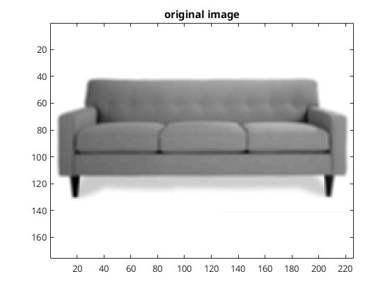 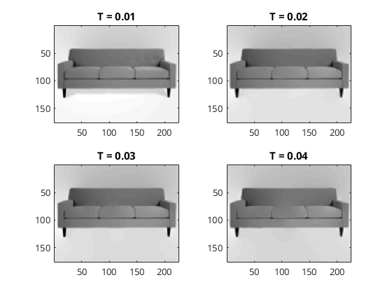